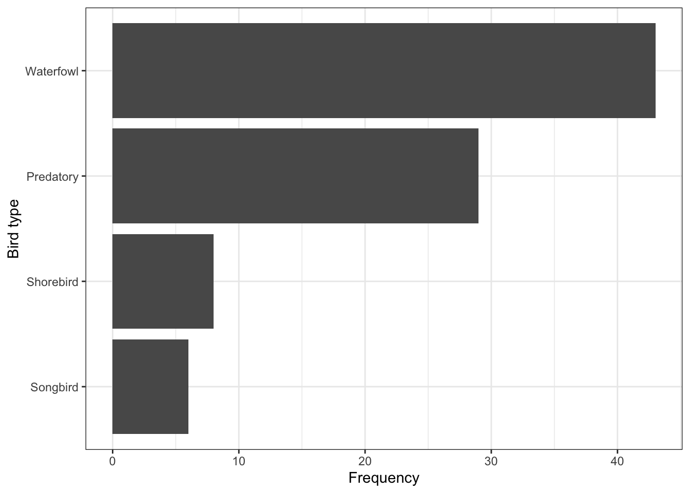

2.4 Visualizing and describing categorical data
2.4.1 Creating a frequency table for one categorical variable
Use the xtabs command (from the base stats package) to produce a frequency table, which shows the frequency distribution for a categorical variable in tabular format. We’ll assign the output of the xtabs function to an object called dom.eye.freq.
Here we show the frequency of observations in each of the two categories contained in the dominant_eye variable within the students dataframe. We first run the function and assign the output to an object dom.eye.freq, then type the name of the object to show its contents:
dom.eye.freq <- xtabs(~ dominant_eye, data = students)
dom.eye.freq## dominant_eye
## l r
## 48 106TIP: Take note of the syntax in the arguments provided to the xtabs function. We’ll return to this later.
We see that there are 2 categories (or “levels”) “l” and “r” representing left and right; this was also shown by the skim function earlier. There are 48 and 106 observations (students) in those respective categories.
To show the relative frequency distribution for the dominant_eye variable, use the prop.table function on the dom.eye.freq object. Again, we’ll assign the output to an object, here called dom.eye.prop:
dom.eye.prop <- prop.table(dom.eye.freq)
dom.eye.prop## dominant_eye
## l r
## 0.3116883 0.6883117You can convert these relative frequencies to percentages by multiplying them by 100:
100 * dom.eye.prop## dominant_eye
## l r
## 31.16883 68.831172.4.1.1 OPTIONAL
Or for those that are able to use the tigerstats package, you can use the rowPerc function to convert the raw frequencies to percentages:
rowPerc(dom.eye.prop)2.4.2 Create a sorted frequency table
When there are more than 2 categories in the variable of interest, you will need to sort the frequencies in decreasing order.
There are several steps to this, which we’ll demonstrate using the birds dataset.
- use the
xtabsfunction to create a frequency table - use the
sortfunction to sort the resulting frequencies across categories - use the
data.framefunction to create a data frame that stores the properly sorted frequencies - rename the variables in the data frame
- show the resulting table
bird.table <- xtabs(~ type, data = birds) # create frequency table
bird.table.sort <- sort(bird.table, decreasing = TRUE) # sort the frequencies in decreasing order
bird.df <- data.frame(bird.table.sort) # create a data frame
names(bird.df) <- c("Birdtype", "Frequency") # rename variables
bird.df # show the final table## Birdtype Frequency
## 1 Waterfowl 43
## 2 Predatory 29
## 3 Shorebird 8
## 4 Songbird 6There we go! A frequency table that is appropriately sorted. We’ll use the bird.table.sort object later for graphing too.
2.4.2.1 Alternative approach
An alternative and more efficient way to create a sorted frequency table uses the tabyl function from the janitor package, along with the %>% or “pipe” operator, which is loaded with the dplyr package. This operator allows you to string together a series of commands, without having to create intermediate output objects.
We also make use of the arrange and desc functions from the dplyr package.
Let’s see the code, and explain after:
birds %>%
tabyl(type)## type n percent
## Predatory 29 0.33720930
## Shorebird 8 0.09302326
## Songbird 6 0.06976744
## Waterfowl 43 0.50000000We first tell R which object we’re going to use for our subsequent operations. Here, the birds dataframe object. We then use the %>% operator to tell it that we have further functions to come!
The next line of code uses the tabyl function from the janitor package, and tells R which categorical variable (type) to tabulate frequencies for.
What we get is a table with 3 columns. The first column contains the unique categories for the type variable. The second column provides the frequency of observations in each category, and the last column is the proportion of observations in the categories (contrary to what is indicated by the “percent” heading!).
If there had been missing values in the type variable, you would see another row in the table indicating the frequency of “NA” values.
But note that the table isn’t sorted! To sort the table in decreasing order of frequency, we add another line of code after another %>%, and use the arrange function in conjunction with the desc function as follows:
birds %>%
tabyl(type) %>%
arrange(desc(n))## type n percent
## Waterfowl 43 0.50000000
## Predatory 29 0.33720930
## Shorebird 8 0.09302326
## Songbird 6 0.06976744The desc function is operating on the “n” column in the output table from the preceding tabyl, and suffice it to say it works with the arrange function to sort the frequencies.
2.4.3 Creating a bar chart
We use a bar chart to visualize the frequency distribution for a single categorical variable.
Here we’ll use the ggplot approach with its geom_bar function to create a bar chart.
To produce the bar chart, we need to produce a summary frequency table first. So let’s get this from our tabyl script above. Here we’ll assign the sorted frequency table to a dataframe called “bird.type.sort”:
bird.type.sort <- birds %>%
tabyl(type) %>%
arrange(desc(n))Now we can use this to create a barchart. Let’s provide the code first, and explain after.
ggplot(data = bird.type.sort, mapping = aes(x = reorder(type, n), y = n)) +
geom_bar(stat = "identity") +
ylab("Frequency") +
xlab("Bird type") +
coord_flip() +
theme_bw()
All figures produced using the ggplot2 package start with the ggplot function. Then the following arguments:
- the data frame or tibble that holds the data (“data = students”)
- an “aes” argument, within which one specifies the variables to be plotted; here we’re plotting the frequencies from the “n” variable as the “y” variable, and the “type” variable as the “x” variable. To ensure the proper sorting of the bars, we use the
reorderfunction, telling R to reorder thetypecategories according to the frequencies in thenvariable - then there’s a plus sign to tell ggplot we’re not done yet with our graph - there are more functions coming
- then the type of graph, which uses a function starting with “geom”; here we want a bar chart, hence
geom_bar - the
geom_barfunction has its own argument: “stat = ‘identity’” tells it just to make the height of the bars equal to the values provided in the “y” variable, heren. - the x-axis label
- the y-axis label
- the “coord_flip()” function tells it to rotate the graph horizontally
- then the “theme_bw” function indicates we want a simple black-and-white theme
There you have it: a ggplot version of a bar chart!
2.4.4 Calculating descriptive statistics for a categorical variable
The proportion is the most important descriptive statistic for a categorical variable. It measures the fraction of observations in a given category within a categorical variable. For example: what proportion of the BIOL202 class has a left dominant eye?
The proportion of students that have a left dominant eye is the same as the relative frequency of students in the class that have a left dominant eye. Earlier, using the students dataset, we learned how to show the relative frequencies of students with left versus right dominant eyes in the class using the prop.table function:
dom.eye.freq <- xtabs(~ dominant_eye, data = students)
dom.eye.prop <- prop.table(dom.eye.freq)
dom.eye.prop## dominant_eye
## l r
## 0.3116883 0.6883117As shown above, the proportion of students that have left dominant eye is 0.3116883. Proportions always fall between 0 and 1.
We can also get this from our table we produced with the tabyl function; the last column of the table provides the relative frequencies, a.k.a. proportions, within each category (even though it says “percent”):
bird.type.sort## type n percent
## Waterfowl 43 0.50000000
## Predatory 29 0.33720930
## Shorebird 8 0.09302326
## Songbird 6 0.06976744